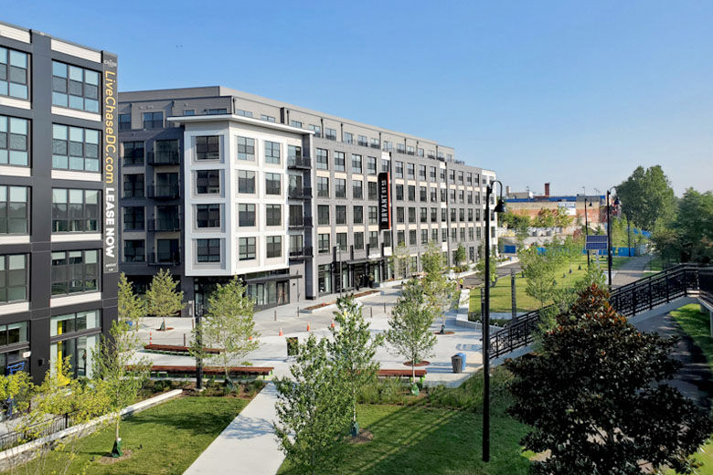

Hello and Welcome to the First and many more Chess Tournament for Cancer! Some of the most famous players will be playing, like: - Magnus Carlsen - Hikaru Nakamura - Gukesh Dommaraju - Anna Cramling - Levy Rozman - Levon Grigori - And more!
The event will be held at the Bryant Street Market in Washington, DC, and will be live-streamed by the official Chess.com account on YouTube and Twitch. In addition to the donations, there will be an auction featuring signed items by the players, including books, shirts, photos, and more. Also, there will be giveaways for chess mats, pieces, opening books, and more. There will be a non-master section for players who want to play for fun and to get a medal and a small prize. Live at:YouTube Live at: Twitch